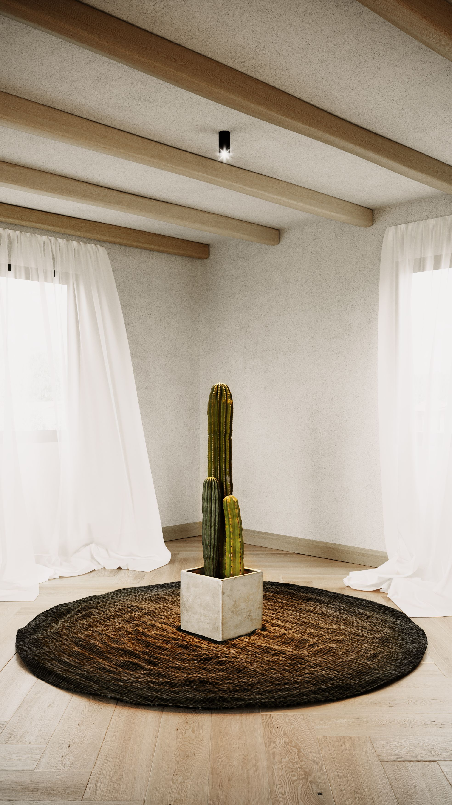
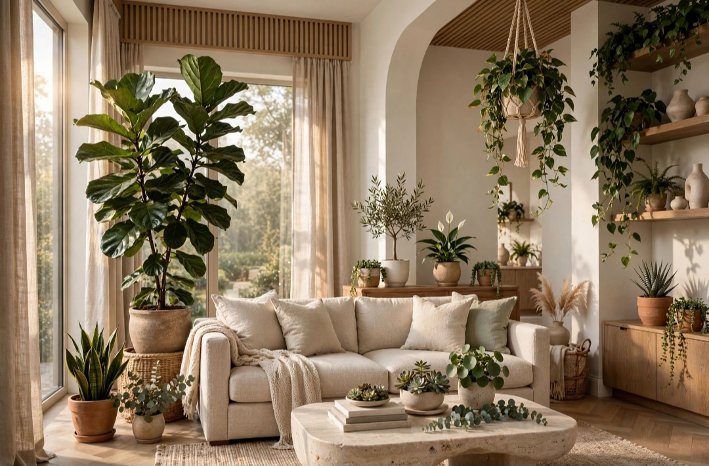

En este artículo
- Introducción
- Analiza el clima y la exposición antes de elegir
- Madera: calidez natural y mantenimiento periódico
- Aluminio, acero y hierro: diferencias importantes
- Materiales sintéticos y fibras para exterior
- Cómo equilibrar mantenimiento, comodidad y presupuesto
- Método práctico
- Preguntas frecuentes
- Conclusión
Introducción
Descubre cómo elegir materiales para los muebles del jardín con criterios prácticos de tamaño, materiales, mantenimiento, seguridad, funcionalidad y estilo para tomar una decisión adecuada.
Una buena elección empieza por comprender las condiciones reales del espacio y el uso que tendrá cada elemento. Antes de comprar, conviene medir, comparar materiales, revisar cuidados y pensar cómo cambiarán las necesidades con el tiempo.
Analiza el clima y la exposición antes de elegir
Los muebles de jardín están expuestos a condiciones que no afectan de la misma forma al mobiliario interior. Sol, lluvia, humedad, viento, salinidad y cambios de temperatura influyen en la duración de cada material. Antes de comprar, observa si el lugar está cubierto, cuántas horas recibe sol y si los muebles permanecerán fuera durante todo el año.
En una terraza protegida, algunos materiales delicados pueden funcionar bien; en un jardín totalmente expuesto, conviene priorizar opciones preparadas para exterior. Las condiciones costeras requieren atención adicional a la corrosión, mientras climas muy secos pueden acelerar el desgaste de determinados acabados.
También importa la posibilidad de guardar o cubrir el mobiliario. Si dispones de un espacio seco para invierno, puedes ampliar las opciones. Si las piezas permanecerán siempre fuera, la resistencia y el mantenimiento deben pesar más en la decisión.
Consulta las especificaciones del fabricante en lugar de asumir que cualquier producto con apariencia exterior está preparado para intemperie. La durabilidad depende del material, de su tratamiento y de la calidad de fabricación.
Madera: calidez natural y mantenimiento periódico
La madera combina de forma natural con vegetación y puede envejecer de manera atractiva cuando se cuida correctamente. Sin embargo, no todas las especies tienen la misma resistencia. Algunas maderas densas y adecuadas para exterior soportan mejor humedad e insectos, mientras otras necesitan tratamientos protectores más frecuentes.
La exposición al sol puede cambiar el color original. Ese envejecimiento no significa necesariamente que la estructura esté dañada, pero si quieres conservar el tono tendrás que seguir las recomendaciones de limpieza y protección. Evita aplicar productos incompatibles o tratamientos sin conocer el acabado existente.
Revisa uniones, tornillos y zonas donde el agua pueda acumularse. Mantener las patas fuera de charcos y permitir ventilación ayuda a reducir problemas. Durante periodos sin uso, una cubierta transpirable o un almacenamiento adecuado puede prolongar la vida útil.
La madera es una buena opción para quien valora tacto y apariencia natural y acepta una rutina de cuidado. Si buscas prácticamente cero mantenimiento, quizá otro material se adapte mejor a tus hábitos.
Aluminio, acero y hierro: diferencias importantes
El aluminio es ligero y no se oxida del mismo modo que el hierro, por lo que es frecuente en mobiliario exterior. Los acabados de calidad ayudan a proteger la superficie, aunque los muebles muy ligeros deben asegurarse o guardarse cuando existe viento fuerte.
El acero ofrece resistencia estructural y puede utilizarse en diseños delgados. Necesita protección adecuada frente a corrosión, especialmente cuando el recubrimiento se daña. El hierro es pesado y estable, una ventaja en zonas ventosas, pero también requiere vigilancia de óxido y puede ser difícil de mover.

Los metales se calientan al sol y pueden resultar incómodos al tacto. Cojines aptos para exterior y zonas de sombra mejoran el confort. Revisa además soldaduras, tornillería y acabado antes de comprar.
En ambientes costeros, pregunta específicamente por resistencia a la salinidad. Limpiar depósitos y reparar pequeños daños en el recubrimiento antes de que avancen forma parte del mantenimiento preventivo.
Materiales sintéticos y fibras para exterior
Los plásticos y polímeros diseñados para exterior pueden ofrecer bajo mantenimiento y buena resistencia a humedad. La calidad es muy variable: revisa protección frente a radiación solar, rigidez, estabilidad y recomendaciones de uso. Un material barato que se vuelve quebradizo rápidamente puede resultar más costoso a largo plazo.
Las fibras sintéticas trenzadas imitan ratán y otras fibras naturales, pero están formuladas para soportar mejor el exterior. Aun así, estructura y calidad del tejido importan. Comprueba que no haya zonas flojas, bordes cortantes o uniones débiles.
Las fibras naturales aportan textura, pero muchas funcionan mejor en espacios cubiertos y protegidos. No confundas apariencia con resistencia. Si el fabricante limita su exposición a lluvia o sol, respeta esa indicación.
Para limpiar materiales sintéticos suele bastar agua, jabón suave y herramientas no abrasivas, aunque siempre conviene seguir las instrucciones específicas. Evita productos agresivos que puedan deteriorar protección o color.
Cómo equilibrar mantenimiento, comodidad y presupuesto
El precio inicial no cuenta toda la historia. Considera cuánto tiempo esperas utilizar los muebles, qué mantenimiento requieren y si podrás conseguir repuestos como cojines o piezas. Un conjunto algo más costoso puede ser razonable si su estructura es reparable y está preparado para las condiciones reales del jardín.
Prueba la comodidad antes de comprar cuando sea posible. La resistencia del material no compensa una silla incómoda. Observa altura del asiento, inclinación del respaldo, estabilidad y facilidad para levantarse. Si utilizarás cojines, incluye su almacenamiento y limpieza en la planificación.
Mide el espacio y deja circulación suficiente. Los muebles de exterior suelen parecer más pequeños en una exposición amplia que en una terraza doméstica. Marca dimensiones en el suelo antes de decidir.
Finalmente, combina materiales con criterio. Una mesa de madera con estructura metálica o sillas sintéticas alrededor de una mesa de aluminio pueden funcionar bien. Lo importante es que cada componente sea adecuado para exterior y que el conjunto responda al uso real.
Un método práctico para tomar la decisión final
Antes de comprar, escribe tres columnas: necesidades obligatorias, preferencias y límites. En la primera coloca aquello que afecta al funcionamiento; en la segunda, color, estilo o acabados; en la tercera, presupuesto, medidas y mantenimiento. Este ejercicio evita que una característica atractiva haga olvidar un requisito esencial.

Compara varias opciones utilizando los mismos criterios. No te limites a fotografías: revisa dimensiones, composición, instrucciones, garantía y condiciones de uso. Cuando sea posible, observa una muestra físicamente y comprueba cómo se comporta con la luz y los materiales del entorno.
Calcula también el coste de mantener la elección. Productos de limpieza, tratamientos periódicos, repuestos o instalación pueden cambiar el presupuesto real. Una opción razonable es aquella que puedes cuidar correctamente sin convertir el mantenimiento en una carga.
Finalmente, evita decidir con prisa. Una compra que permanecerá años merece una revisión adicional. Si todavía tienes dudas entre dos alternativas, vuelve a la función principal y elige la que resuelva mejor el uso cotidiano.
Protección y almacenamiento fuera de temporada
Incluso los materiales preparados para exterior duran más cuando se reducen exposiciones innecesarias. Limpia y seca los muebles antes de cubrirlos o guardarlos. Evita plásticos completamente cerrados sobre piezas húmedas, porque pueden favorecer condensación.
Guarda cojines en un lugar seco y ventilado. Si utilizas fundas, elige modelos que se ajusten correctamente y sigue las recomendaciones del fabricante. Una rutina al final de cada temporada permite detectar tornillos flojos, pequeños puntos de corrosión o acabados que necesitan renovación.
Tapicerías, cojines y textiles de exterior
El material de la estructura no es el único elemento expuesto. Cojines y tapicerías necesitan tejidos adecuados para exterior si permanecerán fuera. Revisa resistencia a humedad, radiación solar y facilidad de limpieza. Incluso los textiles preparados para exterior duran más cuando se guardan secos durante periodos prolongados de lluvia.
Las fundas desenfundables facilitan el mantenimiento. Comprueba cremalleras, costuras y disponibilidad de recambios. Un mueble estructuralmente bueno puede seguir utilizándose durante años si es posible renovar los textiles cuando se desgastan.
El color también influye en el mantenimiento visual. Tonos muy claros muestran suciedad con facilidad y algunos colores intensos pueden evidenciar decoloración. Elige según exposición y frecuencia de uso, no solo por la apariencia en catálogo.
Durabilidad, reparación y sostenibilidad
Comprar muebles que duren reduce sustituciones. Busca estructuras que puedan repararse, tornillería accesible y piezas reemplazables. Una silla que permite cambiar un listón o una funda puede tener una vida útil mucho mayor que un producto sellado que debe desecharse por un fallo pequeño.
Pregunta por origen de la madera y materiales reciclados cuando esa información sea importante para ti. Las certificaciones y fichas técnicas ofrecen más valor que afirmaciones ambientales vagas. También considera mobiliario de segunda mano si está en buen estado y es adecuado para exterior.
Al final de la vida útil, separar materiales facilita su gestión. Diseños desmontables pueden ser más fáciles de reparar y reciclar. La sostenibilidad práctica combina procedencia, duración, mantenimiento y posibilidad de recuperación.

Errores frecuentes al comprar muebles de jardín
Comprar sin medir es uno de los más comunes. En una tienda amplia, una mesa para seis puede parecer compacta y después bloquear una terraza. Marca el conjunto completo, incluyendo sillas retiradas, antes de decidir.
Otro error es asumir que “exterior” significa que puede permanecer indefinidamente bajo cualquier clima. Lee límites y cuidados. También evita mezclar muebles de alturas incompatibles: una silla demasiado baja para la mesa resulta incómoda aunque ambos productos sean de buena calidad.
Finalmente, calcula dónde guardarás cojines, fundas y piezas plegables. El almacenamiento forma parte del proyecto y debe resolverse antes de llenar el espacio.
Comparación práctica según el tipo de uso
Para una zona de comedor utilizada todos los días, busca superficies estables, fáciles de limpiar y resistentes a manchas. Una mesa con muchas ranuras puede ser atractiva, pero exige más tiempo de limpieza. Las sillas deben soportar movimiento constante y permitir una postura cómoda durante comidas largas.
En una zona de descanso, la comodidad puede tener más peso. Sofás modulares y sillones con cojines crean una experiencia cercana al interior, pero requieren resolver almacenamiento y secado. Si no puedes guardar textiles, considera diseños que sigan siendo utilizables sin cojines o materiales que gestionen mejor la exposición.
Para balcones pequeños, el peso y la posibilidad de plegar son importantes. Muebles compactos de aluminio o materiales sintéticos pueden facilitar reorganización. En jardines amplios y ventosos, piezas más pesadas ofrecen estabilidad.
Si el mobiliario se utilizará solo ocasionalmente, evita dedicar demasiado espacio a una configuración permanente. Mesas extensibles y sillas apilables permiten adaptar el jardín a visitas sin bloquearlo durante el resto de la semana.
Lista de comprobación antes de pagar
Confirma dimensiones, altura de mesa y asiento, peso, material de estructura, acabado y condiciones de garantía. Pregunta si el producto llega montado y si puede atravesar los accesos hasta el jardín.
Revisa instrucciones de mantenimiento y disponibilidad de fundas o repuestos. Si una pieza necesita aceite o protección periódica, calcula ese trabajo dentro de la compra. Comprueba también si los cojines están incluidos o se venden por separado.
Una decisión final debería responder a cuatro preguntas: ¿cabe?, ¿es cómodo?, ¿resiste las condiciones reales? y ¿puedo mantenerlo correctamente? Si alguna respuesta es dudosa, compara otra alternativa antes de comprar.
Preguntas frecuentes
¿Cuál es la mejor manera de empezar?
Empieza definiendo las condiciones reales de uso y comparando opciones según el tema de cómo elegir materiales para los muebles del jardín. Medir, observar y revisar las especificaciones evita muchas decisiones equivocadas.
¿Cuánto tiempo se necesita para ver resultados?
La elección puede hacerse en poco tiempo si las necesidades están claras, pero conviene comparar varias opciones y probar muestras o medidas antes de realizar una compra o intervención definitiva.
¿Qué errores deberían evitarse?
Los errores más frecuentes son elegir solo por apariencia, ignorar medidas y condiciones ambientales, no considerar el mantenimiento y utilizar materiales o sistemas que no son apropiados para el uso previsto.
Conclusión
Cómo elegir materiales para los muebles del jardín es más sencillo cuando la decisión combina función, dimensiones, mantenimiento, seguridad y estética. Comparar opciones con criterios concretos permite evitar compras impulsivas y conseguir un resultado que se adapte mejor a la vida cotidiana.